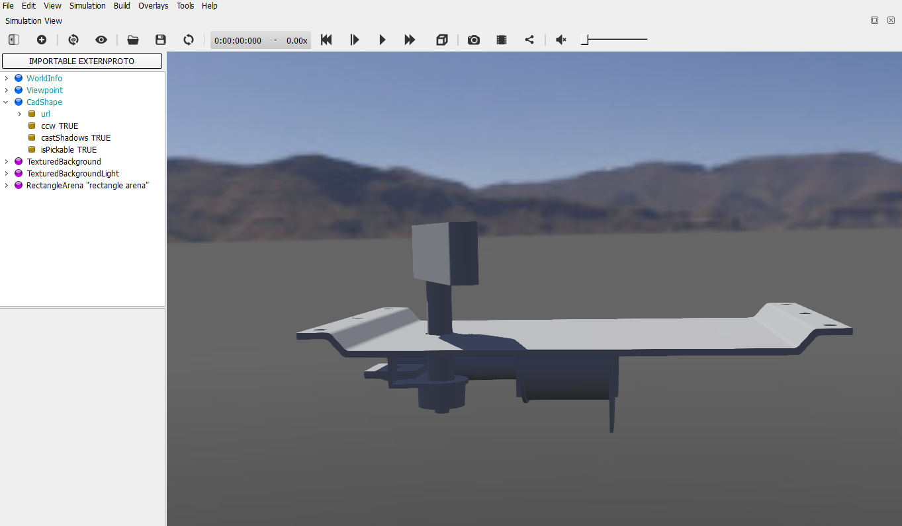

Tutorial_1 <<
Previous Next >> Web_server
CadShape
https://www.cyberbotics.com/doc/reference/cadshape
Webots 可以利用 CadShape node 導入 Collada (.dae) or Wavefront (.obj) 零件, 其中 Solvespace 與 NX2312 都能輸出 .obj 零件格式, 但 Webots 並沒有如 CoppeliaSim 自動分割組立件的功能, 必須自行處理.
利用 Python 分割 .stl 組立件:
# pip install numpy
import struct
import numpy as np
class STLSplitter:
def __init__(self, filename):
self.filename = filename
self.is_binary = self._check_if_binary()
def _check_if_binary(self):
"""檢查 STL 檔案是否為二進制格式"""
with open(self.filename, 'rb') as f:
# 讀取前 5 個字節
header = f.read(5).decode('utf-8', errors='ignore')
# ASCII STL 檔案開頭為 "solid"
return not header.startswith('solid')
def _read_binary_stl(self):
"""讀取二進制 STL 檔案"""
with open(self.filename, 'rb') as f:
# 跳過標頭
f.seek(80)
# 讀取三角形數量
triangle_count = struct.unpack('I', f.read(4))[0]
triangles = []
normals = []
# 每個三角形佔 50 個字節
for _ in range(triangle_count):
# 讀取法向量
nx, ny, nz = struct.unpack('fff', f.read(12))
normals.append([nx, ny, nz])
# 讀取三個頂點
triangle = []
for _ in range(3):
x, y, z = struct.unpack('fff', f.read(12))
triangle.append([x, y, z])
triangles.append(triangle)
# 跳過屬性計數值
f.seek(2, 1)
return np.array(triangles), np.array(normals)
def _read_ascii_stl(self):
"""讀取 ASCII STL 檔案"""
triangles = []
normals = []
current_triangle = []
with open(self.filename, 'r') as f:
for line in f:
line = line.strip()
if not line:
continue
parts = line.split()
if not parts:
continue
if parts[0] == 'facet' and parts[1] == 'normal':
# 讀取法向量
normals.append([float(parts[2]), float(parts[3]), float(parts[4])])
elif parts[0] == 'vertex':
# 讀取頂點
current_triangle.append([float(parts[1]), float(parts[2]), float(parts[3])])
elif parts[0] == 'endfacet':
# 三角形結束
if current_triangle:
triangles.append(current_triangle)
current_triangle = []
return np.array(triangles), np.array(normals)
def _split_by_connected_components(self, triangles, normals):
"""使用連通分量分割模型"""
# 建立頂點字典，用於查找相鄰三角形
vertex_to_triangle = {}
for i, triangle in enumerate(triangles):
for vertex in triangle:
vertex_tuple = tuple(vertex)
if vertex_tuple in vertex_to_triangle:
vertex_to_triangle[vertex_tuple].append(i)
else:
vertex_to_triangle[vertex_tuple] = [i]
# 使用深度優先搜索找到連通分量
visited = set()
components = []
def dfs(triangle_idx):
component = []
stack = [triangle_idx]
while stack:
current = stack.pop()
if current not in visited:
visited.add(current)
component.append(current)
# 找到所有相鄰的三角形
for vertex in triangles[current]:
vertex_tuple = tuple(vertex)
for neighbor in vertex_to_triangle[vertex_tuple]:
if neighbor not in visited:
stack.append(neighbor)
return component
# 尋找所有連通分量
for i in range(len(triangles)):
if i not in visited:
component = dfs(i)
components.append(component)
return components
def _write_binary_stl(self, filename, triangles, normals):
"""寫入二進制 STL 檔案"""
with open(filename, 'wb') as f:
# 寫入標頭（80 字節）
f.write(b'\x00' * 80)
# 寫入三角形數量
f.write(struct.pack('I', len(triangles)))
# 寫入每個三角形
for triangle, normal in zip(triangles, normals):
# 寫入法向量
f.write(struct.pack('fff', *normal))
# 寫入三個頂點
for vertex in triangle:
f.write(struct.pack('fff', *vertex))
# 寫入屬性計數值（2 字節）
f.write(struct.pack('H', 0))
def split(self):
"""分割 STL 檔案"""
# 讀取 STL 檔案
if self.is_binary:
triangles, normals = self._read_binary_stl()
else:
triangles, normals = self._read_ascii_stl()
# 分割模型
components = self._split_by_connected_components(triangles, normals)
# 儲存每個部分
for i, component in enumerate(components):
component_triangles = triangles[component]
component_normals = normals[component]
# 生成輸出檔名
output_filename = f"part_{i + 1}.stl"
# 寫入檔案（使用二進制格式）
self._write_binary_stl(output_filename, component_triangles, component_normals)
print(f"已儲存零件 {i + 1} 到 {output_filename}")
return len(components)
# 使用範例
if __name__ == "__main__":
splitter = STLSplitter("pinball.stl")
num_parts = splitter.split()
print(f"總共分割出 {num_parts} 個零件")
Python 分割 .stl 組立件, 同時將零件從 .stl 轉為 .obj 檔案格式:
import struct
import numpy as np
from pathlib import Path
class STLConverter:
def __init__(self, filename):
self.filename = filename
self.is_binary = self._check_if_binary()
def _check_if_binary(self):
"""檢查 STL 檔案是否為二進制格式"""
with open(self.filename, 'rb') as f:
header = f.read(5).decode('utf-8', errors='ignore')
return not header.startswith('solid')
def _read_binary_stl(self):
"""讀取二進制 STL 檔案"""
with open(self.filename, 'rb') as f:
f.seek(80)
triangle_count = struct.unpack('I', f.read(4))[0]
triangles = []
normals = []
for _ in range(triangle_count):
nx, ny, nz = struct.unpack('fff', f.read(12))
normals.append([nx, ny, nz])
triangle = []
for _ in range(3):
x, y, z = struct.unpack('fff', f.read(12))
triangle.append([x, y, z])
triangles.append(triangle)
f.seek(2, 1)
return np.array(triangles), np.array(normals)
def _read_ascii_stl(self):
"""讀取 ASCII STL 檔案"""
triangles = []
normals = []
current_triangle = []
with open(self.filename, 'r') as f:
for line in f:
line = line.strip()
if not line:
continue
parts = line.split()
if not parts:
continue
if parts[0] == 'facet' and parts[1] == 'normal':
normals.append([float(parts[2]), float(parts[3]), float(parts[4])])
elif parts[0] == 'vertex':
current_triangle.append([float(parts[1]), float(parts[2]), float(parts[3])])
elif parts[0] == 'endfacet':
if current_triangle:
triangles.append(current_triangle)
current_triangle = []
return np.array(triangles), np.array(normals)
def _split_by_connected_components(self, triangles, normals):
"""使用連通分量分割模型"""
vertex_to_triangle = {}
for i, triangle in enumerate(triangles):
for vertex in triangle:
vertex_tuple = tuple(vertex)
if vertex_tuple in vertex_to_triangle:
vertex_to_triangle[vertex_tuple].append(i)
else:
vertex_to_triangle[vertex_tuple] = [i]
visited = set()
components = []
def dfs(triangle_idx):
component = []
stack = [triangle_idx]
while stack:
current = stack.pop()
if current not in visited:
visited.add(current)
component.append(current)
for vertex in triangles[current]:
vertex_tuple = tuple(vertex)
for neighbor in vertex_to_triangle[vertex_tuple]:
if neighbor not in visited:
stack.append(neighbor)
return component
for i in range(len(triangles)):
if i not in visited:
component = dfs(i)
components.append(component)
return components
def _write_binary_stl(self, filename, triangles, normals):
"""寫入二進制 STL 檔案"""
with open(filename, 'wb') as f:
f.write(b'\x00' * 80)
f.write(struct.pack('I', len(triangles)))
for triangle, normal in zip(triangles, normals):
f.write(struct.pack('fff', *normal))
for vertex in triangle:
f.write(struct.pack('fff', *vertex))
f.write(struct.pack('H', 0))
def _write_obj(self, filename, triangles, normals):
"""寫入 OBJ 檔案"""
# 建立頂點索引對照表
vertex_dict = {}
vertex_list = []
normal_list = []
faces = []
# 處理每個三角形
for triangle, normal in zip(triangles, normals):
face_indices = []
# 處理三角形的每個頂點
for vertex in triangle:
vertex_tuple = tuple(vertex)
if vertex_tuple not in vertex_dict:
vertex_dict[vertex_tuple] = len(vertex_list) + 1
vertex_list.append(vertex)
face_indices.append(vertex_dict[vertex_tuple])
# 加入法向量
normal_list.append(normal)
faces.append(face_indices)
# 寫入 OBJ 檔案
with open(filename, 'w') as f:
# 寫入頂點
for v in vertex_list:
f.write(f"v {v[0]} {v[1]} {v[2]}\n")
# 寫入法向量
for n in normal_list:
f.write(f"vn {n[0]} {n[1]} {n[2]}\n")
# 寫入面資料
for i, face in enumerate(faces):
f.write(f"f {face[0]}//{i+1} {face[1]}//{i+1} {face[2]}//{i+1}\n")
def split_and_convert(self):
"""分割 STL 檔案並轉換為 OBJ 格式"""
# 讀取 STL 檔案
if self.is_binary:
triangles, normals = self._read_binary_stl()
else:
triangles, normals = self._read_ascii_stl()
# 分割模型
components = self._split_by_connected_components(triangles, normals)
# 建立輸出目錄
output_dir = Path('split_parts')
output_dir.mkdir(exist_ok=True)
# 儲存每個部分
for i, component in enumerate(components):
component_triangles = triangles[component]
component_normals = normals[component]
# 生成檔名
base_name = f"part_{i + 1}"
stl_filename = output_dir / f"{base_name}.stl"
obj_filename = output_dir / f"{base_name}.obj"
# 儲存 STL 檔案
self._write_binary_stl(stl_filename, component_triangles, component_normals)
# 儲存 OBJ 檔案
self._write_obj(obj_filename, component_triangles, component_normals)
print(f"已儲存零件 {i + 1} 到:")
print(f" STL: {stl_filename}")
print(f" OBJ: {obj_filename}")
return len(components)
# 使用範例
if __name__ == "__main__":
converter = STLConverter("pinball.stl")
num_parts = converter.split_and_convert()
print(f"\n總共處理了 {num_parts} 個零件")
從 Solvespace 或 NX2312 轉出的 stl 組立件, 利用上列程式分割出各 stl 零件時, 同時轉為 obj 零件格式, 之後將各 obj 零件拖曳至 Blender4.2.7z 後進行改名, 如下圖所示.

從 Blender4.2.7z 取得各 obj 格式零件名稱之後, 再利用 CadShape node 將各零件導入 Webots 場景, 如下圖所示.

Tutorial_1 <<
Previous Next >> Web_server